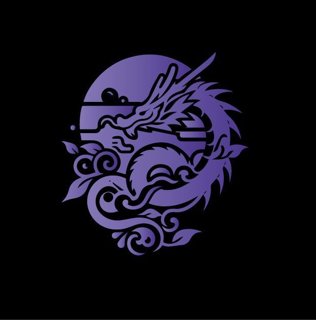
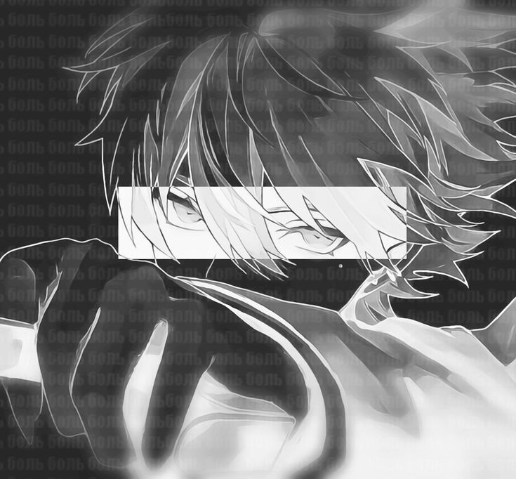
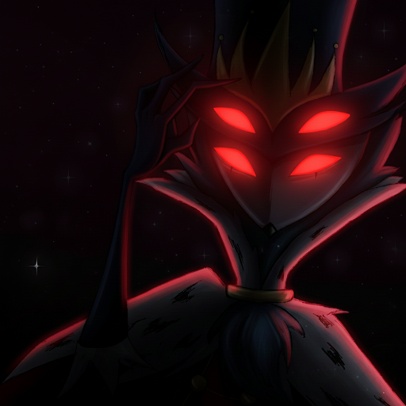
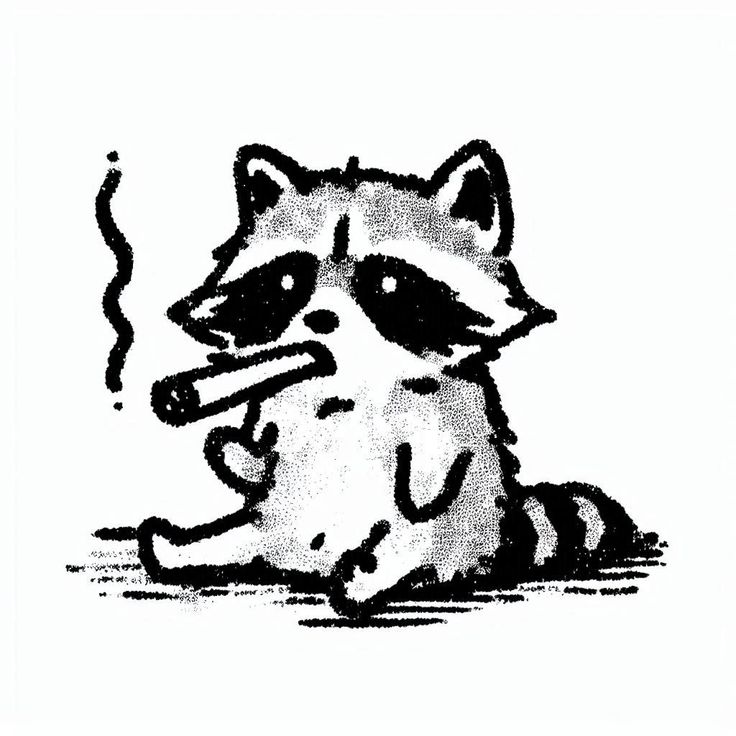
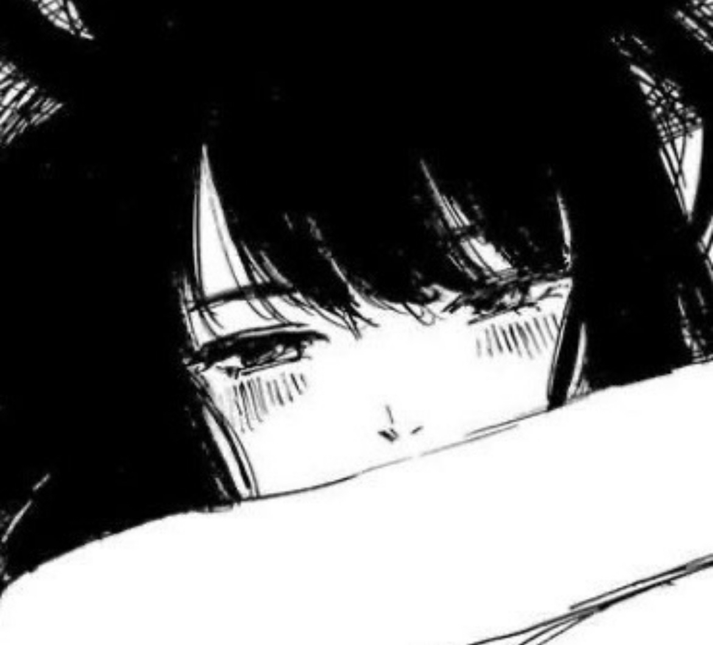
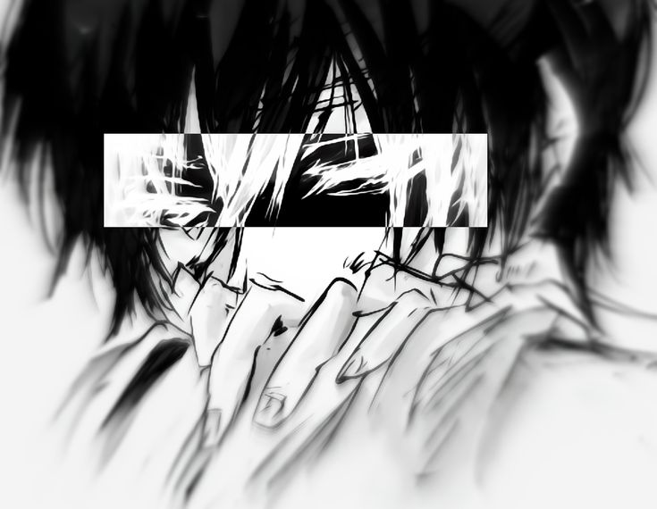

Buscamos personas con ganas de mejorar y crecer. Lo importante es la actitud..
Tokyo Manji (Toman), es mucho más que un clan... Somos una comunidad creada para personas que buscan más que simplemente jugar. Valoramos la convivencia, el respeto, la lealtad y el crecimiento mutuo. Nuestro objetivo es construir un espacio donde cada miembro pueda mejorar a su ritmo, fortalecer sus habilidades, conocer nuevas personas y formar parte de algo grande. Aqui todos tienen un lugar para para crecer.

Owner
User: kakashiiPAA

Manager
User: 12345MebanearondIP

Lider
User: ¿?

Lider
User: Naquita_chismosa

Lider
User: andrik0509A
Primera división
Segunda división
Tercera división
Contributors
Builder
Allys
Los principios que representan a Tokyo Manji y guían nuestro crecimiento como clan.
Mantener un ambiente sano y agradable para todos los miembros.
Siempre buscamos crecer individual y colectivamente en un ambiente de respeto y apoyo mutuo.
Perfeccionar nuestras habilidades y destacar como clan.
Permanecer unidos y apoyarnos mutuamente en todo momento.